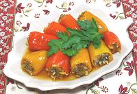

|
Stuffed Peppers - SmallUkraine, Crimean Tatars - Biber Dolma po Kryms'ko-Tatars'ky | ||||
| Serves: Effort: Sched: DoAhead: |
8 app *** 1-1/3 hrs Yes |
Stuffed peppers (and other stuffed things) are very popular in Ukraine. These are best warm, but are still very good at room temperature - but don't serve too cold. | |||
|
ar 8 4 2 3 1 1 1/2 1/2 2 1/4 ar ----- |
oz oz oz T T T t t T c --- |
Peppers (1) Beef, ground (2) Onion Carrot Rice Parsley, fresh Dill, fresh Salt Pepper, black Butter Tomato Paste Broth, or (3) -- Serve with Sour Cream |
If the peppers you use are longish, they will slice quite nicely after cooking. Use your imagination on the serving. Prep - (45 min)
|